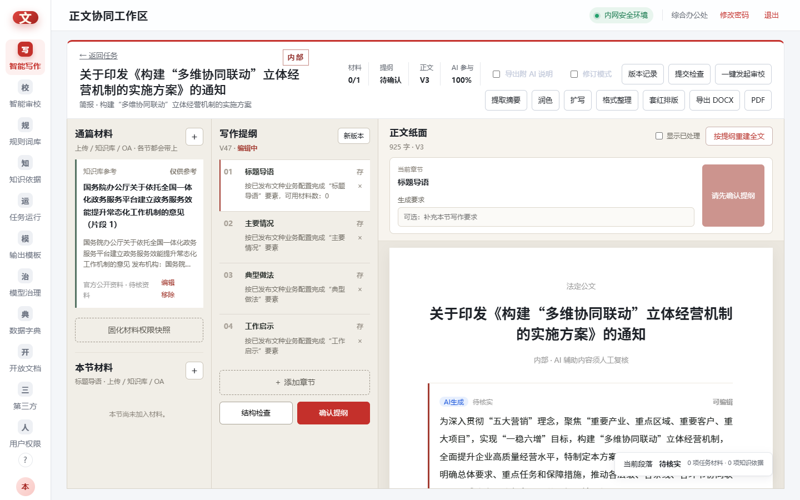
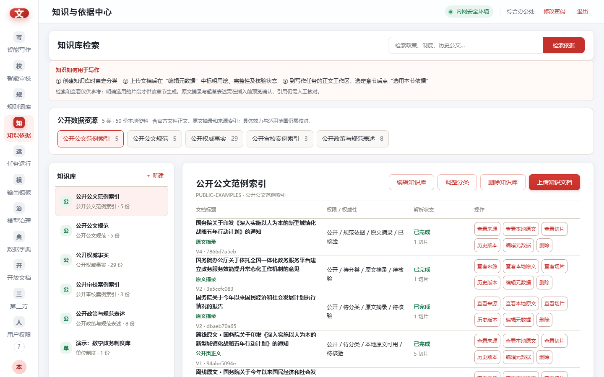
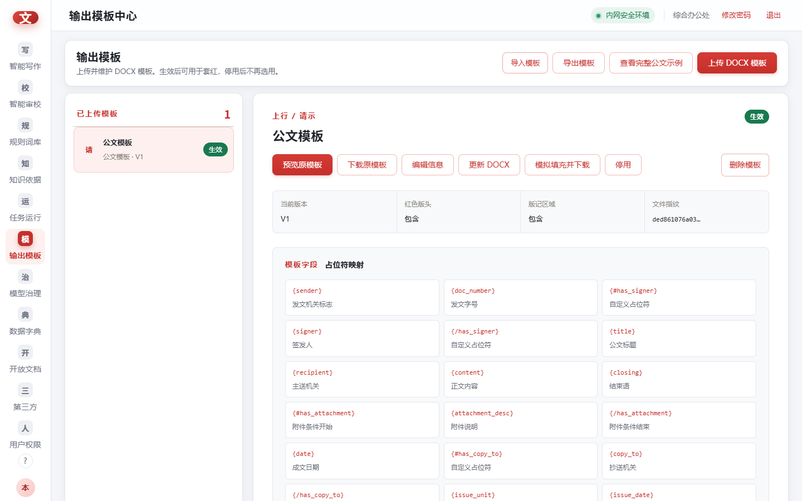
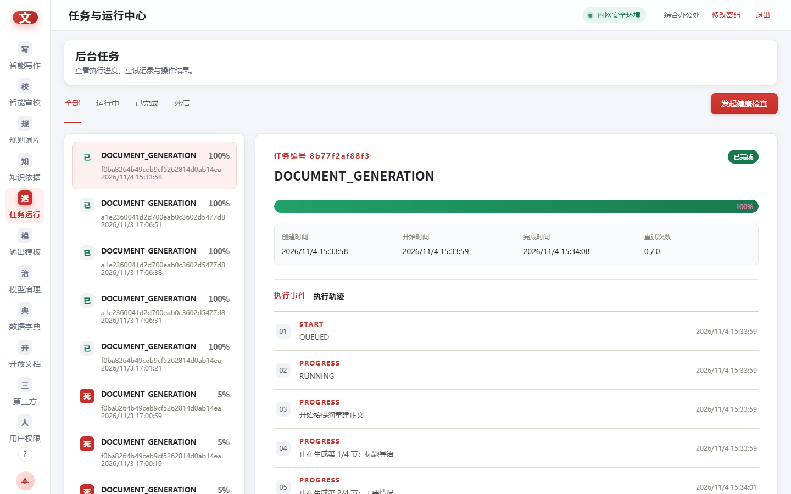

政文智枢
系统演示汇报
按真实界面讲一篇通知：先看任务和文种，再看材料与正文，然后对照原文处理审校问题，最后看规则、知识和对外接入。
建议时长：15 分钟
样本：关于印发《构建“多维协同联动”立体经营机制的实施方案》的通知
版本：2026 年 11 月
1. 开场：这条链路做什么
用一句话开场：平台把起草、核稿和管理员配置放在同一套界面里。演示不从功能清单开始，从一篇已经写过的通知开始。
讲解：左侧导航就是演示路线。今天按写作、审校、规则、知识、模板、治理走一遍。生成内容和审校建议都要人工确认。
- 登录后停在智能写作，指出左侧导航。
- 打开印发通知任务，先讲文种，再进正文工作区。
- 切到智能审校，点开一条问题，让原文定位可见。
- 用规则、知识、模板各停 1 分钟，说明这些配置决定前面的结果。
2. 写作任务与文种推荐
打开「关于印发《构建“多维协同联动”立体经营机制的实施方案》的通知」。先指进度条，说明任务已经过材料、提纲，当前在正文编辑之后、审校之前。
点「智能推荐文种」。结果是通知，说明写明：标题以「的通知」结尾，事由是印发方案、办法、细则或计划，法定文种是通知，书名号内的文件名称不是法定文种。
讲解：任务卡片上的文种是创建时保存的。推荐结果不会自动改掉它。这篇标题已经写明通知，所以不看写作目的里有没有「部署」「安排」这些词。
 图 1 写作任务与文种推荐。右侧给出通知及印发类说明。
图 1 写作任务与文种推荐。右侧给出通知及印发类说明。
如果标题没有法定文种，再按行文关系和写作目的对照条例第八条。对不上就显示「未能判定」，不要讲成系统会猜一个文种。
3. 材料、提纲与正文
点「进入材料 / 提纲 / 正文工作区」。按从左到右讲三栏。
- 通篇材料：各章节都能用。本节材料只给当前章节。知识条目如果写着仅供参考或待核验，就说明还不能当现行依据。
- 写作提纲：章节来自文种配置。演示时指出「确认提纲」是生成正文前的门槛。
- 正文纸面：当前章节、生成要求和正文。段落上的「AI 生成」「待核实」要停留一下。
讲解：生成使用的是已选材料和已确认提纲。模型没有返回时，这一步不能现场编造成功结果，改用已经生成的版本继续讲。

图 2 材料、提纲和正文在同一屏。正文标题下标明须人工复核。
4. 对着原文审校
进入智能审校，选中同一篇通知。左侧原文，右侧问题清单。点一条问题，让听众看到它回到对应段落。处理按钮是忽略、修改完成、转人工。
讲解：页眉上的分数只是这次结果的汇总，不要说成准确率。写着「模型提出，须人工确认」的，就按待核对建议讲。改完原文后要点重新审校，历史记录留着。
 图 3 审校页面。问题与公文原文对照，可导出 PDF 或 DOCX 报告。
图 3 审校页面。问题与公文原文对照，可导出 PDF 或 DOCX 报告。
另外指出两个入口：「已有文稿」审已经在平台里的正文，「上传本地文件」审单位自己的 DOCX。不必先建写作任务。
5. 规则与词库
打开规则与词库。先读页首一句：生效规则参与审校，停用后不再使用，命中测试不改变启用状态。
讲解：内置规则包目前显示 56 条可执行规则。导入时已有代码会跳过，不覆盖单位改过的规则。两可词和历史旧称只提示，不自动改名。
 图 4 审校规则。可按分类筛选，每条规则有生效状态和查看详情。
图 4 审校规则。可按分类筛选，每条规则有生效状态和查看详情。
如果现场要打开一条规则，只演示停用、启用和命中测试。不要找送审或发布按钮，当前界面没有这些操作。
6. 知识依据
打开知识与依据。先读页面上的使用说明，再点开一个公开资料库。
讲解：检索和查看切片只是阅读。要参与写作，必须在写作任务里选用，并指定章节。来源页面能打开，不表示文件仍然有效。

图 5 知识库按来源和核验状态列出文档，可查看本地原文和切片。
7. 套红模板
打开输出模板。说明上传的 DOCX 生效后才能套红，停用后不再选用。占位符对应发文机关、字号、标题、主送、正文、日期和印发信息。
讲解：模拟填充只检查模板能不能填上，不改变生效或停用。正文改了以后要重新套红。下载的 DOCX 还要在单位常用的办公软件里看一遍版式。

图 6 公文模板及占位符。状态为生效。
8. 模型、第三方与运行记录
模型治理里指出三件事：场景、最高数据级别、调用额度。凭据只登记环境变量名。不要在演示里打开或念出密钥。
 图 7 模型路由按场景和数据级别分开配置。
图 7 模型路由按场景和数据级别分开配置。
第三方应用页按页面上的流程讲：新增应用，配置 API Key 与白名单，生成密钥，选择可调用能力。密钥只显示一次。开放文档里的两个必填头是 X-Open-App-Code 和 X-Open-Api-Key。
 图 8 第三方应用及白名单入口。
图 8 第三方应用及白名单入口。
任务运行页用来回答「生成进行到哪一步」。可以展开一条已完成记录，看开始、排队和按章节生成。失败记录只说明可以查看和重试，不要现场重跑一个会失败的任务。

图 9 后台任务的执行轨迹。
9. 收束时要说明的边界
收束：今天看到的是一条可以操作的链路。正式使用前，还要按单位要求核对身份、模型、规则来源、模板版式和真实文稿。
- 不报审校准确率，不把页眉分数说成质量认证。
- 不把模型建议说成已经核实的事实。
- 不承诺断网时仍能调用外部模型。
- 开放接口上的摘要、润色、扩写和直接提交的正文审校，不在平台保存文稿。